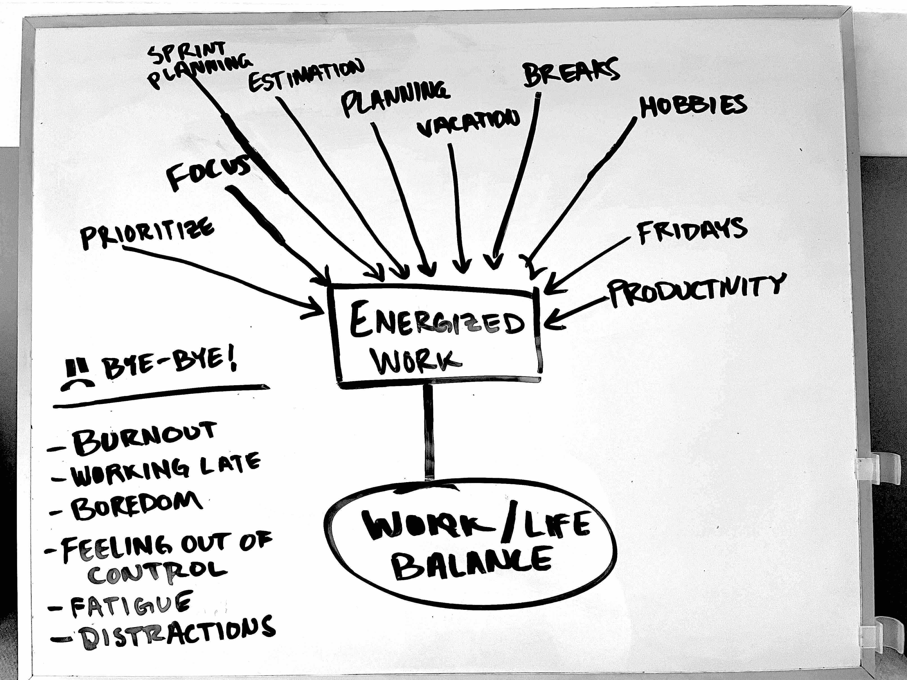

Summarized chapters and sections from my reading of Kent Beck's "Extreme Programming Explained". Sentiments from one a nd two-star Amazon reviews of the book. Some of my thoughts about X P as well.
2021-02-02
Distinguishing features:
Beck says that success comes out of both good relationships as well as technique.
Everything involved in software development is constantly changing. Change is not the problem, the real problem is the inability to cope with all of the different things that will change.
Stay aware of the ever-changing project requirements and be able to adapt your work to meet the needs.
Customers don’t usually have a clear idea of what the software should do.
Practices are the things that programmers do daily (eg. pair programming).
Values are defined as “the roots of the things we like and don’t like in a situation.”
Values give purpose to the practices (eg. well-being, work-life balance, communication).
Principles are the guidelines that connect practices with values (eg. quality work, rapid feedback).
People have different ideas and views about what things are important when it comes to building software. What matters most is that the people involved come to an agreement about what things to follow. So, it’s not any one person’s individual ideas and views that are important, but that everyone is focused on the same values.
XP suggests at least five values that teams can focus on. Each team or organization may have a few more.
Communication is kind of self-explanatory to me.
It is difficult to find simple solutions to problems. Bias your thinking toward eliminating wasted complexity. Less communication is needed when simple solutions are preferred.
The goal should be more about steady improvement than instant perfection. The perfect solution is almost always an unachievable goal.
Strive to generate feedback early and often. Feedback comes from peers, customers, and project stakeholders.
All of the previously mentioned values point to respect and care for each other and for the success of the project.
I don’t really understand what this one means.
Software development practices should be guided by underlying principles. Principles clarify what practices are intended to accomplish.
The following principles are likely to be applicable to all software development projects.
Good developers need these basic things in the work environment:
Prioritize solving the highest priority business needs first. Doing so will avoid achieving just a mere “technical success” at the end of a project.
Software that can be easily reused carries more economic value than software that can only be used for the original purpose.
Beware of solutions and practices that are only beneficial at the cost of others. Strive for practices that benefit all three groups:
Beck provides an example of a not-so-good practice, which is writing extensive internal documentation:
“I am supposed to slow down my development considerably so some unknown person in a potential future will have an easier time maintaining this code. I can see a possible benefit to the future person should the documentation still happen to be valid, but no benefit now.”
Beck suggests a better solution, which is to write an automated test instead. The author of the test benefits from the practice, as does the team, both at the present time, as well as in the future. The test also serves as reliable documentation.
Do the best work that you can do right now, and then gradually improve upon it as time goes on.
Diversity fosters healthy conflict within teams. It surfaces more options to consider when problem solving.
Team members must know how to handle conflict productively, and how to treat each other with respect.
Take time to ask how and why things are (or are not) going well.
Analytical data can help with reflection, but senses and emotions are also valid things to consider.
Good teams are open to sharing their mistakes so that they can learn from them.
Try to deliver features frequently, and at a steady interval.
Too much change taken at once is dangerous for the project. Team members should instead work in baby steps. There is overhead to working in baby steps, but it’s worth it.
Failure is not wasted so long as it results in knowledge. Try to fail fast when possible.
Approach problems or struggles as learning opportunities.
It’s not wise to try to solve certain problems in software development with one solution alone. For certain problems, it’s better to have multiple practices in place.
Individuals need to do work that they can be proud of.
It’s wrong to think that a project will move faster if the quality is decreased. Project scope, not quality, should be leveraged as a control variable.
Responsibility cannot realistically be given out – it’s only accepted or not accepted.
The practices one follows tends to indicate which responsibilities they have accepted.
Practices are the things programmers likely do every day.
They don’t amount to anything without being tied to values and principles.
Sitting together has potential to enhance communication.
This practice can also be considered cross-functional teams. People should be grouped into teams based on the skills needed for a project to succeed.
Working more hours does not usually result in more value added to a project. Choose to work more efficiently, and with more focus, rather than working more hours.
A rested and relaxed mind will produce software that is more valuable.
Write code in pairs to see benefits such as:
Plan work that relates directly to customer-visible functionality.
Main goals of sprint planning meeting includes:
Try to reduce the amount of time spent planning as the project progresses.
Spend time reflecting as a team. Find and discuss any bottlenecks. Pick some goals to focus on during the quarter.
Not Slack the app 🙃.
Don’t commit to unrealistic goals.
The ideal goal is to have:
Writing software as a team isn’t strictly a “divide and conquer” problem. It is more like “divide, conquer, and integrate”.
Integration can often be unpredictable and take longer than expected.
Write a failing test before changing or adding code. It will help solve problems such as:
Refactor and design the system system on a daily basis to avoid creating something that is devastatingly difficult to change.
Begin XP by being aware of the need for change. Awareness comes via feelings, and metrics (trends in data).
The best way to start doing XP is one practice at a time. Choose practices based on which values and goals you want to realize.
Team leaders should not dictate XP practices. XP won’t be effective unless team members choose to be “on board”.
An exercise for discovering what various practices mean to the team is to:
Example:

These are secondary practices to follow, once the primary ones are implemented.
Involve end-users in the design and development of the system you’re working on.
Whenever possible, find a way to deploy functionality incrementally rather than all at once.
Respond to defects by putting tests in place such that it’s not likely to happen again. Once resolved, try to figure out the root cause.
A proposed method for doing so is to first ask why a defect occurred. Then ask why again based on the response. Do this five-levels deep to discover the root-level cause.
Avoid having people that only work on certain parts of the system. Each programmer on the team should be comfortable enough to improve any part of the system.
It’s better to have just one main branch. Feature branches, where programmers introduce change, should be very short-lived.
If there’s an underlying design problem that is causing you to have multiple code bases, fix that issue instead.
Prioritize stories based on business value, and not for technical reasons.
See the Wikipedia entry.
Planning is like buying groceries.
Software defects destroy trust. Testing software is an investment into healthy teamwork. Testing is as important as programming.
Both defects as well as time spent planning can be considered a cost. There are two principles in XP that can help increase the effectiveness of removing defects.
Double-checking refers to the idea that if you approach a problem from two different ways, reaching the same result for both cases, then it’s all the more likely that the solution is correct.
This idea can be applied to software by writing tests, which is a lot different than writing the code. Writing tests and writing code are two distinct ways to double-check that the code is doing what you expect it to do.
Defect Cost Increase says that it’s much easier to fix defects sooner than later. That’s because it’s difficult to dig up the history and context of the code in question when defects are discovered later on.
“Design always”, is the XP motto.
Designing is intended to be a daily practice in XP.
Designing software is often compared to constructing buildings - but that’s not a very good comparison. Software needs to continue running as usual while it’s continuously being modified and updated.
Designing is a continuous feedback cycle. Design in small iterations so that feedback can be collected and utilized to continue designing further.
Good software designers must balance several different factors to determine when to design:
Design ties into trust. Weekly delivery of requested functionality is almost always the most important priority to the customer. So, remember that “the perfect design” is lower on the priority list than maintaining trust and good relationships within the team.
Scaling doesn’t always have to refer to the amount of people. Other ways projects can scale include:
Steps suggested to approach a big problem:
Integrate the solutions to the smaller problems often to reduce the risks of two solutions not working well together.
Separation of QA and development sends the message that developers cannot be trusted to uphold the quality of their own work, or that it’s not the job of the developers to do quality work.
Seeing results from applying XP can take a long time.
Adopting XP as a style of software development will not automatically eliminate your problems. It will, however, provide a new way to go about solving them.
Leading by example is a powerful way to start applying XP.
Quick adoption of XP is more likely to happen if the team members are all willing to accept the changes.
It’s wrong to consider a team or organization is doing enough to truly be considered as “Extreme”, as if it’s some kind of club membership that you need a high enough score to get into.
The question or goal should be more along the lines of, Are our relationships and projects satisfying and successful?
Integrity is key to XP. Figure out what your values are, and act in harmony with them.
These are some criticisms, taken from one and two-star reviews of the book.
I agree with most of the values, principles, and practices defined by the XP methodology, but with a grain of salt.
I love the idea of having clearly defined values, principles, and practices in place. Simply having those kind of things, whether defined by XP or not, is important for software development teams and organizations.
I think the extent to which XP should be applied is highly situational. As Kent Beck states in the book, adapting XP should be something that the team actually believes in and wants to do in order to be successful. Also, I think that the type of product that the team is working on can make a difference in how effective XP is.
At the time of writing this, I am doing some of the practices which are outlined in the book, but not always to the full extent.
I definitely identify as an introvert, yet I enjoy pair programming. I pair with each member of my team for at least two hours each week. This totals up to about eight hours of pair programming for me. I wouldn’t mind doing it more often.
I like to learn from other people’s approach to solving problems. My team members benefit from talking through ideas and figuring out solutions together. I find that it’s easier to stay on task.
I agree that tests are just as important as production code, however I’ve yet to live up to the standard that a test should be written first if I’m being completely honest. There are times when I can effectively do it, but it’s not often.
I find that simply having a test (the right kind of test) is more important than focusing on how it is written. I can appreciate tests for three main reasons:
One thing I strongly agree with hits on a few different principles mentioned in the book: Flow, Baby Steps, and Improvement. I see these principles manifest in things like:
The reason I agree with these principles is because it makes teamwork easier and provides opportunity for feedback more regularly. It’s easier to review small changes to the code. Small, well-defined tasks are easier to complete.
To wrap my thoughts up, I generally think XP has a lot of valuable advice to consider. It’s important to figure out what values and principles matter the most to you and your team. I will be applying more of the principles into my life to form some stronger opinions.